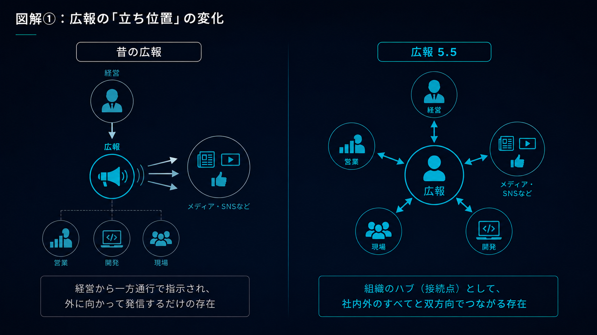
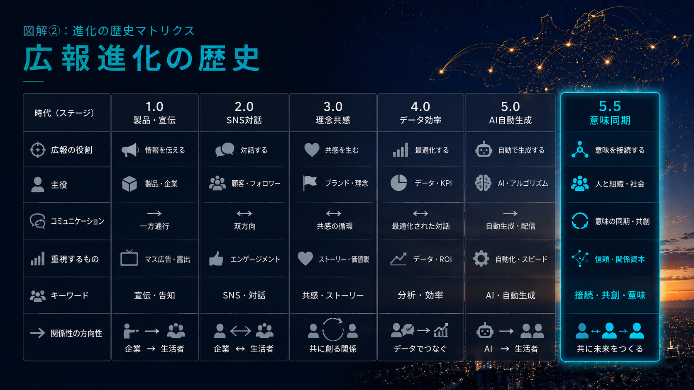
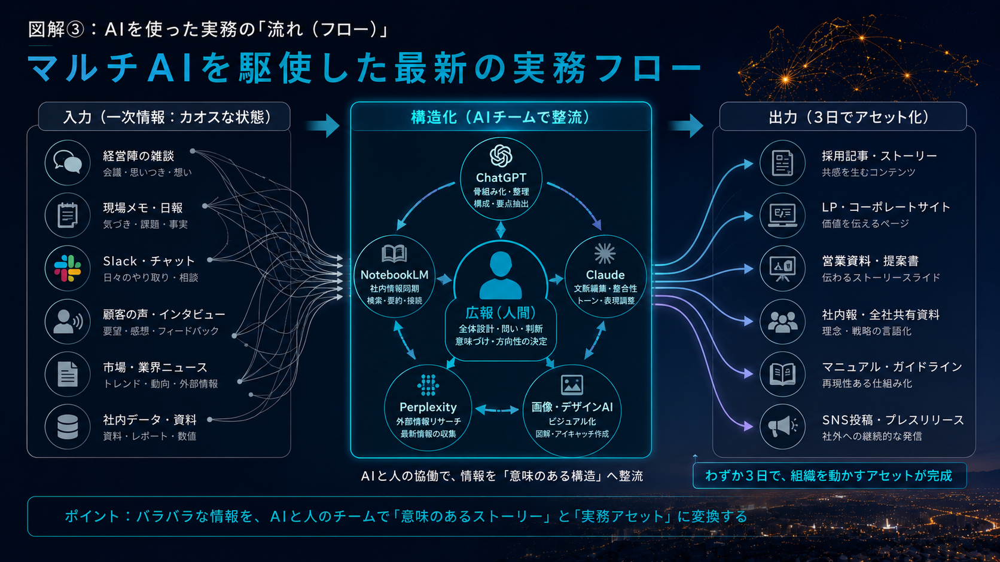

Hiring
採用候補者ごとに、会社説明が違う。
求人票、note、面談、営業資料で会社の見え方が微妙にズレている。
PR 5.5 / Meaning Sync / AI Communication Ops
note、採用広報、営業資料、社内報、LP。発信物は増えたのに、経営・現場・市場の前提が揃わない。そんな企業に対して、AI時代の広報Opsで情報を整流し、社内外に伝わる共通言語を設計します。
Service: 意味同期診断 / 広報5.5設計 / AI広報Ops構築 / note・LP・営業資料・社内報の再設計
部署ごとに、会社の説明が違う。
経営・営業・採用・広報の言葉が揃う。
01 / Target
Hiring
求人票、note、面談、営業資料で会社の見え方が微妙にズレている。
Sales
誰が説明するかで、事業の強みや顧客価値の定義が変わってしまう。
Internal
会議では伝えたはずなのに、現場の行動や優先順位が揃わない。
02 / Problem
「顧客ファースト」「価値提供」「らしさ」が、営業・開発・人事で別々の行動を指している。
AIで綺麗な記事やリリースは量産できる。しかし、内側の認識が同期されていなければ、発信するほど乖離が広がる。
noteや社内報を通じて、現場が初めて経営の意思や自分の仕事の意味を再発見することがある。
社内外の言葉を整流し、経営・現場・市場が同じ前提で動ける状態をつくる。
03 / Solution
きれいなコピーを作るだけではなく、経営・現場・市場の情報を集め、ズレを見つけ、共通言語に変換し、note・LP・営業資料・社内報・FAQへ落とし込みます。
01 / Diagnosis
会社説明、採用広報、営業資料、社内発信を確認し、言葉のズレ・重複・抜け漏れを可視化します。
02 / Design
経営・現場・市場をつなぐ情報導線を設計し、何を拾い、どう翻訳し、どこに出すかを決めます。
03 / Operation
自動文字起こし、NotebookLM、ChatGPT、Claudeなどを前提に、一次情報から実務アセットを生む運用を作ります。
04 / Before → After
Sales
会社の価値・事例・強みの説明が人によってブレにくくなる。
Hiring
求人票や面談だけでは伝わらない、会社の思想と現場感が届く。
Internal
他部署の動きや経営の意図が横串で見えるようになる。
AI Ops
単発の文章生成ではなく、一次情報からアセット化する運用に変わる。
05 / Core Thesis
問題は、発信量や文章力の不足ではない。組織の中で、同じ言葉の意味が、構造的に分岐し、滑り落ちている状態である。
Core thesis / Public Relations 5.506 / Diagram

従来の一方向発信から、経営・現場・開発・市場を双方向につなぐハブ型広報への変化。
07 / Evolution

広報1.0から5.5までの変化を、役割・コミュニケーション・AI活用・関係性の観点で整理した進化図。
08 / Workflow

経営・現場・Slack・顧客インタビューなどの一次情報を、AIと人の協働で構造化し、実務アセットへ変換するフロー。
議事録要約ではなく、会話の熱量や迷いを含む生テキストを保持する。
社内ファクトと外部トレンドを接続し、文脈のズレを見つける。
ChatGPTで論点、矛盾、一般化可能なフレームを立ち上げる。
Claudeと人間編集で、note、LP、営業資料、社内報へ変換する。
09 / Proof
Business
営業・マネジメント・COO・事業立ち上げを経験し、売上と仕組み化の痛みを理解しています。
Content
週次noteや社内コミュニケーションを継続し、現場の情報を言葉へ変換してきました。
AI Ops
複数AIを使い分け、一次情報から構造・原稿・図解・資料へ変換する型を持っています。
Field
きれいな広報論ではなく、部署間のズレや現場の警戒心を観測しながら設計します。
10 / Field Notes
Diagnosis
売り込みではなく、会社説明・採用広報・営業資料・社内発信のどこで意味がズレているかを30分で整理します。
社内外で会社の説明がズレる。採用広報の言葉が定まらない。AI活用が文章生成で止まっている。そんな違和感を、意味同期の観点から診断します。
意味同期診断を相談する →